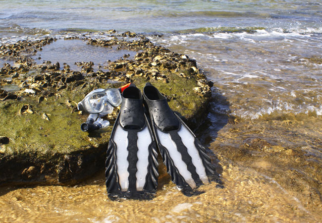

Sandy shores, pristine waters, and sensational scenery,
East London is known for its nightlife and beautiful
beaches which will leave you with endless beach days
and tons of fun in the sun for holidaymakers and
residents alike. If you are planning your next
outing or should your next holiday be a staycation,
then we’ve got a load of suggestions for
you to check out the top 50 things to do in
East London and surrounding areas.
These include the best places to indulge
and grab a tasty snack, top beach spots,
family outings, good music and more
which they are in no particular order!
